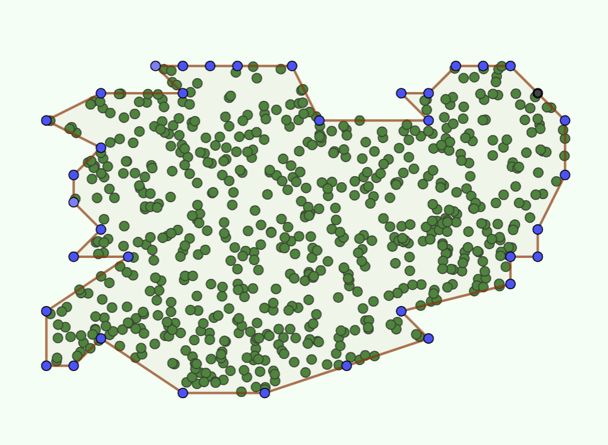
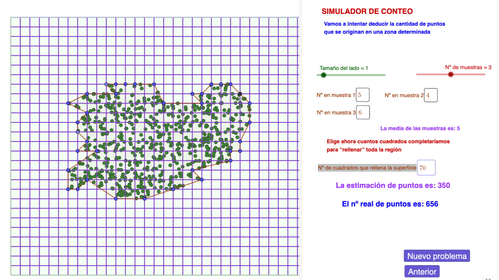

Actividad 2: Practicamos con el simulador
Vamos a practicar con un simulador, para saber cómo se obtiene una estimación
Sigue los pasos y cuando hayas estimado y visto la solución, contesta a las siguientes preguntas


https://www.geogebra.org/m/efappjjy (Ventana nueva)
Actividad 2.1
Calcula el porcentaje de error que has cometido al hacer tu estimación respecto del resultado real
Actividad 2.2
Una vez que hayas hecho una estimación, modifica los datos (puntos en cada muestra o nº de muestras) y comprueba lo que difieren unos resultados de otros.
Actividad 2.3
Usando la hoja de cálculo (haciendo copias si es preciso de la primer hoja) compara los resultados si usas un estimador u otro
Soluciones
Actividad 2.1
Por ejemplo: Supongamos que hemos obtenido 450 puntos y en la solución sale 657. El porcentaje de error que hemos cometido es:
En este caso sale mucho y deberíamos afinar mucho más nuestros cálculos
Actividad 2.2
Vamos a suponer que con los mismos datos, hemos variado diferentes tomas de muestra y tamaño de la cuadrícula y hemos obtenido los siguiente resultados:
| Puntos reales | nº muestras | Puntos estimados | Error cometido |
| 848 | 5 | 800 | 5,66% |
| 848 | 4 | 925 | 9,08% |
| 848 | 3 | 780 | 8,01% |
| 848 | 4 | 920 | 8,49% |
| 848 | 5 | 890 | 4,95% |
Ahora se tendría que analizar en qué casos el error ha sido menor y porqué
Lo lógico sería que cuando hemos tomado más muestras y el tamaño de la cuadrícula ha sido adecuado la estimación salga mejor.
Actividad 2.3
| Estimador | Valor |
Nº de muestras |
Estimación |
Puntos reales |
Error |
| Máximo | 8 | 4 | 900 | 848 | 6,13% |
| Mediana | 6 | 5 | 811 | 848 | 4,26% |
| Media | 6,4 | 6 | 830 | 848 | 2,12% |
| Mínimo | 5 | 4 | 780 | 848 | 8,01% |